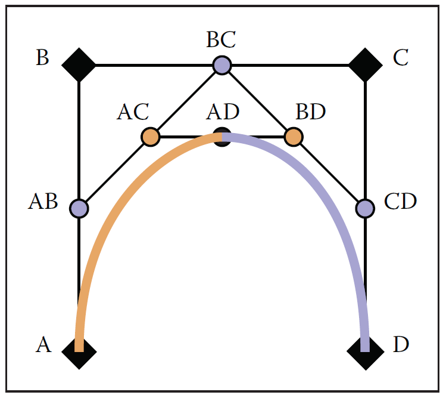

In this page we'll look at a different way to construct Bezier curves. This will give you a sense of the mathematical beauty of them. Seeing the construction makes the properties of the curves obvious, and gives good intuitions for the formulas. The construction also leads to practical algorithms since it gives us a fast way to divide the curve into two parts, so we can create divide and conquer algorithms.
This material is in Section 15.6.1 of the book under the heading "Geometric Intuitions for Bezier Curves".
Suppose we have a Bezier curve defined by n points. I'll just number the points 0,1,2, ... It doesn't matter what dimension the points are in.
Suppose we want to evaluate the curve for a parameter value u, where . What we do is:
If we start with 2 points, this is a line segment (linear interpolation between the points).
If we start with 3 points, we first interpolate between points 0 and 1, and between 1 and 2. This gives us 2 new points (call them 01 and 12). Then we interpolate between 01 and 12, to get point 0112, which is our answer.
If we start with 4 points, we first interpolate between points 0 and 1, 1 and 2, and between 2 and 3. This gives us 3 new points (call them 01, 12 and 23). Then we interpolate between these to get 0112 and 1223. Then we interpolate these two points to get the final answer.
Notice that we do a sequence of linear interpolations.
Here is an animation where you can set u to see what the construction does for 2,3,4 and 5 points.
You can see me doing the algorithm on the white board in videos showing the algorithm for 3 points (a second degree curve) and showing the algorithm for 4 points (a third degree curve).
In this box you can drag the points around to see what happens as the points move. Use shift click to add points (they add at the end of the list), and ctrl-click (or meta-click on a Mac) to remove points.
It may not be obvious, but the construction in Box 1 gives exactly the same curves as the polynomial forms on the previous page! There is an interesting history, but it seems like the two approaches (the geometric construction above and the use of Bernstein polynomials) were developed independently by different groups around the same time (and both at French car companies!).
To see the equivalence, write out the expressions for the process. The line segment is easy. For the 3 point case, the algebra is fairly easy. Compute points 01 and 12 as functions of 0,1,2 and u. Then compute 0112 as using these two terms and u. Using for 0...
Note that these can be written nicely as basis functions. For each control point, there is a function of u that tells us the weight on the control point for a given value of u. For a value of u, the resulting position is a linear combination of the control points (where the weights are determined by potentially non-linear functions of u).
You can see me doing the derivation on the whiteboard in a video that shows the connection between the geometric constructions and the polynomial forms.
The DeCastlejau construction also provides a method to divide a Bezier curve into two smaller Bezier curves, each with the same degree (and number of points) as the original.
To split a Bezier curve at the position u, we perform the DeCastlejau construction to determine the position of the point for u. The first curve of the curve is the starting point of each line up to the new point and the new point. The second curve starts at the new point and is the end of all the line segments after it.
As an example, suppose we have a Bezier curve with control points (as in the previous box). If we divide the curve at value u, we get two new curves. One with points () and one with points ().
Figure 15.17 in Foundations of Computer Graphics shows this for a cubic (4 point) Bezier curve for value u=.5. The book's notation uses A, B, C and D for the points, so the old curve is (A,B,C,D) and the new curves are (A,AB,AC,AD) and (AD,BD,CD,D). Here it is again:

I was going to ask you to implement this on the next page, but decided not to. Make sure you understand how to split Bezier curves - it makes for a good exam question.
Being able to divide Bezier curves into smaller pieces is really useful in order to implement algorithms to process them. We can start with a Bezier curve and divide it into smaller pieces until those pieces are small enough that we can approximate them with lines (or pixels). This gives effective algorithms for drawing them smoothly, intersecting them, etc.
The DeCastlejau construction gives us a geometric way to create Bezier curves for any number of points. The geometric construction gives intuitions of why these curves have the nice properties that they do. It also gives us an algorithm to divide the curve into pieces which is very useful.
On the next page you can try to implement this.